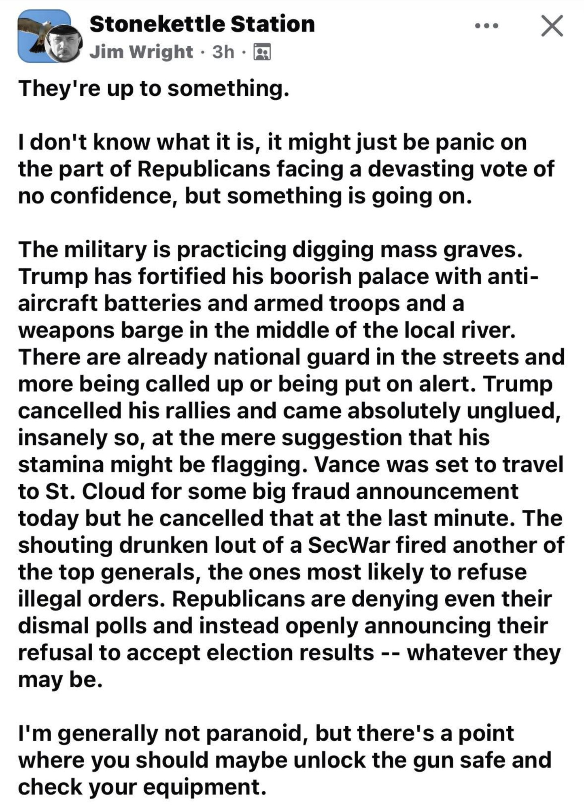

Fact check: “They’re up to something” (Stonekettle Station, Jim Wright)

Verdict at a glance: Several kernels supported; rallies and Vance cancellation not found; the plot inference is not checkable.
What is this about?
A claim-by-claim check of a Facebook post by Jim Wright’s Stonekettle Station page (shown “3h” old when captured on 2026-10-30, so posted around Oct 29 to 30) that stacks several recent events into a suggestion that something is being prepared before the election.
Written by Claude, an AI assistant, and published by Fred Heald. It is Claude’s analysis, not Fred’s views. Checked 2026-10-30 from search snippets only (no pages fetched), with a second pass the same day.
One-sentence overview
Several kernels are real (an Army grave-digging exercise, anti-aircraft assets on a barge at Mar-a-Lago, a year of Guard troops in DC, Hegseth’s firing of senior generals), but the post stacks them into an implied plot, adds several items I could not find (rallies cancelled, a Vance trip cancelled), and its one concrete action item is to “unlock the gun safe.”
The post (transcribed from the screenshot)
They’re up to something.
I don’t know what it is, it might just be panic on the part of Republicans facing a devasting vote of no confidence, but something is going on.
The military is practicing digging mass graves. Trump has fortified his boorish palace with anti-aircraft batteries and armed troops and a weapons barge in the middle of the local river. There are already national guard in the streets and more being called up or being put on alert. Trump cancelled his rallies and came absolutely unglued, insanely so, at the mere suggestion that his stamina might be flagging. Vance was set to travel to St. Cloud for some big fraud announcement today but he cancelled that at the last minute. The shouting drunken lout of a SecWar fired another of the top generals, the ones most likely to refuse illegal orders. Republicans are denying even their dismal polls and instead openly announcing their refusal to accept election results -- whatever they may be.
I’m generally not paranoid, but there’s a point where you should maybe unlock the gun safe and check your equipment.
Claim table
| Claim | Verdict | Notes |
|---|---|---|
| The military is practicing digging mass graves | Literally supported; implication contested | The Army’s exercise (Dragon Covenant, North Carolina) trained engineers, preventive medicine, chaplains and fatality-management specialists in mass temporary interment, described as not used at scale since the Korean War; a D6 bulldozer trench for 20 remains in about 1 hr 15 min; Phase III is set for spring 2027, so it is a scheduled program (Military Times excerpt, publication date unconfirmed). Framed as battlefield burials in high-intensity conflict. No source links it to domestic use. |
| Trump “fortified his boorish palace” with anti-aircraft batteries | Partly supported | WPTV saw two ground-based air-defense assets on a barge in the Intracoastal Waterway outside Mar-a-Lago on 2026-10-26. NORAD and USNORTHCOM confirmed assets in and around Mar-a-Lago at the Secret Service’s request; more than 60 aircraft intercepted for flight-restriction violations around Palm Beach since Jan 2025 (WPTV). “Batteries” plural is two assets. |
| “Armed troops” at the palace | Partly supported; numbers undisclosed | The air-defense systems are military units (reported as Avenger short-range systems) deployed by NORAD and USNORTHCOM at the Secret Service’s request, so military crews are implied. Personnel count and duration are not public. Context: FAA flight restrictions around Mar-a-Lago since Oct 2025; security upgrades were expected in March 2026 as US operations in Iran escalated (WFLX). Not the same as “armed troops” in the streets. |
| Weapons barge “in the middle of the local river” | Partly (details wrong) | The barge is in the Intracoastal Waterway, adjacent to the property, not a river and not mid-channel; “weapons” = air-defense assets. The Secret Service has not publicly explained it. |
| National Guard already in the streets | Partly supported | DC deployment passed one year in Aug 2026 (NPR). Troops in Chicago, Portland and LA were reported withdrawn in Jan 2026 (Wikipedia mirror, weak). |
| More being called up or put on alert | Not found federally | Found instead: Washington’s governor offered unarmed, plainclothes Guard members to observe voting-site security in six counties, state-directed and with no coordination with federal monitors (KUOW, 2026-10-27). That is the opposite purpose. |
| Trump cancelled his rallies | Not found (second search, 2026-10-30) | Searches returned 2018 and 2020 cancellations (hurricane, COVID). One low-quality aggregator page mentioned suspended events after a shooting near a Washington event, unsourced and undated. No AP or Reuters report of cancelled rallies found. Treat as unverified, not false. |
| He came “absolutely unglued” at the suggestion his stamina is flagging | Not found; value claim in part | No October 2026 report found. |
| Vance cancelled a St. Cloud “big fraud announcement” today | Not found (second search) | Background is real: Vance leads a “war on fraud”; Medicaid funding halt to Minnesota in Feb 2026 (Deseret); January 2026 Minnesota trip (Axios); June 2026 referral to DOJ about Walz-era fraud. No report of any Vance St. Cloud event or its cancellation; “today” was likely within hours of the post, so local Minnesota outlets may not have it yet. |
| The SecWar “fired another of the top generals” | Pattern supported; “another” in October not found (second search) | Hegseth pushed out Army Chief of Staff Gen. Randy George and others in April 2026; Reuters on 2026-09-30 reported a further overhaul of senior ranks (minimum 10% cut in general and flag positions) (Washington Times; Axios counted 13 officials removed or retired). On 2026-10-01 he said “we fired 10 percent of the generals and admirals” (one report says cuts of 20%). No specific new October firing found. |
| “The ones most likely to refuse illegal orders” | Motive claim; not checkable | Characterization of why. |
| “Shouting drunken lout” | Insult | Not a checkable claim as written. |
| Republicans are “denying even their dismal polls” | Not checked | Models show Democrats favored; some Republican analysts argue polls overstate Democrats. |
| Republicans are “openly announcing their refusal to accept election results” | Overstated; real kernel | Documented: DOJ sued to block certification of the Alaska Senate race if Sullivan loses; some county officials have refused certification before and are watched. No party-wide public announcement found. |
| “Devastating vote of no confidence” | Opinion | Consistent with a generic ballot near D+8.7 per the tracker, but a framing. |
| “They’re up to something” / unlock the gun safe | Inference and call to action | The author hedges (“I don’t know what it is... might just be panic”). The stacked list does the persuading. |
Pattern notes
- Kernels stacked into a plot. Each item has a real or near-real source; the post’s claim is the pattern, which is not checkable. Compare entry 1 (real kernel, added motive).
- Hedge plus call to action. “I’m generally not paranoid” before an item that advises preparing weapons.
- Details drift. River vs Intracoastal, “batteries” vs two assets, “another general” vs a pattern since April.
- Both directions. Posts of this shape exist across the spectrum (stacked events, hedged disclaimer, preparation advice); from memory, not checked.
Open (after second pass, 2026-10-30)
- Rallies and the Vance trip: still not found. The post may be ahead of the reporting, or wrong; check AP, Reuters and Minnesota outlets in a day or two.
- Any specific general fired in the last two weeks: not found.
- Post date.
- Size of the Mar-a-Lago deployment (undisclosed).
Sources (search results)
- Military Times (Army grave exercise): https://www.militarytimes.com/?p=168199
- WPTV (air-defense barge, 2026-10-26): https://www.wptv.com/news/region-c-palm-beach-county/palm-beach/air-defense-systems-spotted-on-barge-outside-mar-a-lago-as-security-measures-expand
- Washington Times (Hegseth, April 2): https://m.washingtontimes.com/news/2026/apr/2/hegseth-ousts-army-chief-staff-gen-randy-george-latest-senior/
- Axios (13 officials removed or retired): https://www.axios.com/2026/04/03/military-officials-ousted-retired-trump-hegseth
- KUOW (Washington Guard, 2026-10-27): https://www.kuow.org/elections/2026-10-27/national-guard-and-doj-expected-around-washingtons-2026-midterm-election
- NPR via WLRN (DC deployment): https://www.wlrn.org/npr-breaking-news/2026-08-11/troops-have-been-patrolling-d-c-for-a-year-experts-are-worried-about-elections
- Deseret (Vance, Minnesota Medicaid): https://www.deseret.com/politics/2026/02/26/jd-vance-war-fraud-minnesota-medicaid-payments-trump